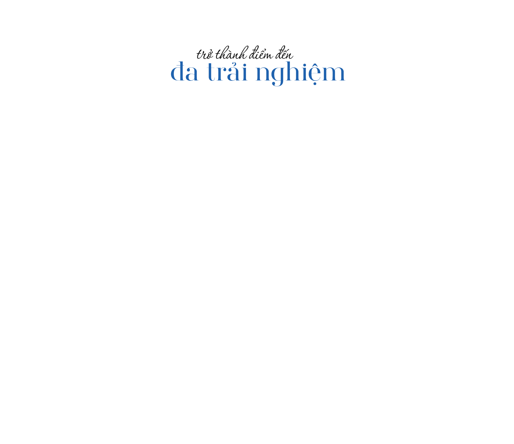
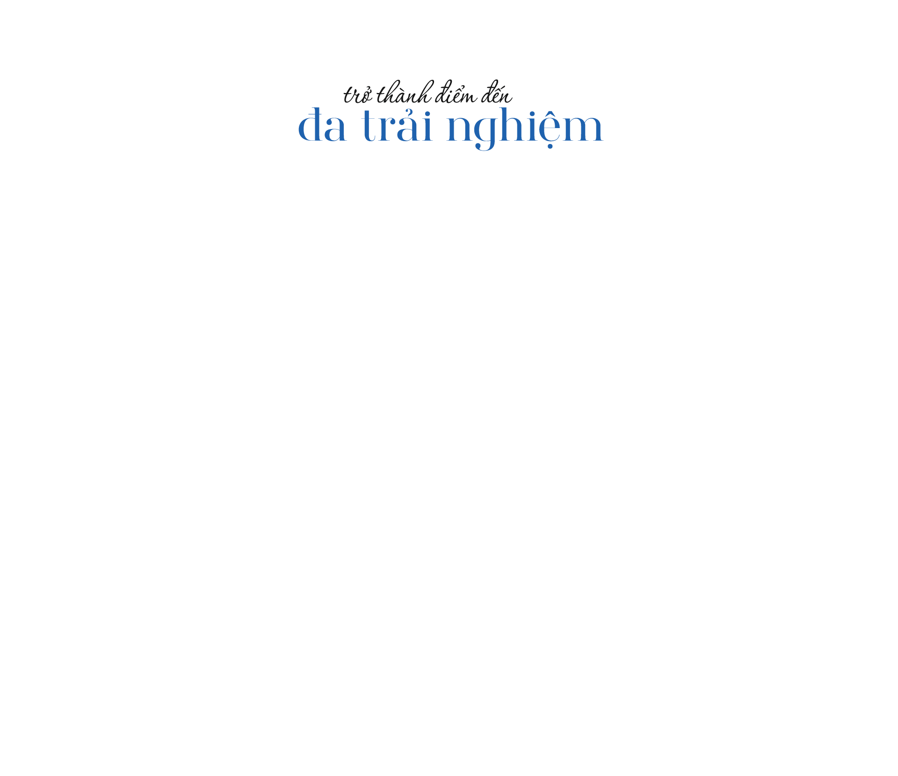

Những vùng đất hoang sơ, chủ yếu làm nông nghiệp hay là nơi lui tới của dân phượt, đã chuyển mình trở thành các điểm du lịch, nghỉ dưỡng nhộn nhịp du khách suốt bốn mùa.

Kéo để lật trang

nhà văn Nguyễn Thành Long trong truyện ngắn “Lặng lẽ Sa Pa”. Khách đến đây chủ yếu là người nước ngoài để khám phá bản làng hoặc tìm về dấu tích khu nghỉ dưỡng của người Pháp hàng trăm năm trước. Sản phẩm du lịch phổ biến là: Ngủ nhà dân, ăn gà rừng, hái rau củ. Đỉnh Fansipan vẫn chỉ là nơi lui tới của dân phượt, những người trẻ sẵn sàng dành 2-3 ngày đêm đi đường rừng cheo leo để tới “nóc nhà Đông Dương". Năm 2013, lượng khách du lịch đến Sa Pa mới chỉ đạt 720.000 người.
Năm 2016, cáp treo Fansipan - hạng mục đầu tiên của khu du lịch Sun World Fansipan Legend được khánh thành. Đây là tuyến cáp treo đạt 2 kỷ lục Guinness: cáp treo 3 dây dài nhất thế giới và cáp treo có độ chênh ga đi, ga đến lớn nhất thế giới. Cùng với sự kiện thông xe cao tốc Nội Bài - Lào Cai năm 2014, du khách thay vì đi ôtô 7 tiếng đến Sa Pa, leo núi hai ngày thì nay chỉ mất ba tiếng đi xe và 15 phút ngồi cáp treo là có thể chạm tay vào cột mốc 3.143 m. Hai năm kể từ khi cáp treo đi vào hoạt động, lượng khách du lịch đến Sa Pa tăng lên 1,56 triệu vào năm 2016; 2,5 triệu năm 2017 và 3,3 triệu năm 2019. Trở lại sau hai năm bị ảnh hưởng bởi dịch Covid-19, năm 2022, Sa Pa đã đón hơn 2,3 triệu lượt, tổng doanh thu về dịch vụ du lịch ước đạt hơn 6.780 tỷ đồng.

Sự xuất hiện của cáp treo Fansipan và tiếp đó là tàu hỏa leo núi Mường Hoa mở ra cơ hội chinh phục “nóc nhà Đông Dương” cho người già, trẻ em, người tàn tật hay đơn giản là người không có đủ thời gian leo núi. Từ trên cáp treo, du khách có thể ngắm vẻ đẹp kỳ vĩ của rừng Hoàng Liên Sơn, khám phá thiên nhiên hùng vỹ, các lễ hội quy mô đậm màu sắc bản địa và chiêm bái quần thể văn hóa kiến trúc tâm linh nằm giữa muôn trùng mây núi. Trong khi đó, tàu hỏa leo núi Mường Hoa đưa du khách băng qua thung lũng tới nhà ga đi cáp treo. Đây cũng là sản phẩm du lịch được du khách tìm đến trải nghiệm và các hãng thời trang trong nước, quốc tế chọn làm nơi chụp ảnh bộ sưu tập mới.


Sự ra đời của Sun World Fansipan Legend còn đánh dấu bước chuyển mình trong đời sống xã hội nơi đây, tạo nhiều công ăn việc làm cho người dân địa phương. Anh Hà Văn Thuận, chủ một cơ sở tắm lá thuốc người Dao cho biết, khi đến Sa Pa lập nghiệp hồi năm 2006, anh đã định bỏ về vì thấy “nơi này heo hút quá, khách Tây có thể ở bản cả tháng nên dịch vụ lưu trú và ăn uống ở thị trấn không phát triển”. Nhưng từ khi cáp treo Fansipan hình thành, lượng khách gia tăng nhanh chóng, anh Thuận đầu tư 35 bồn tắm lá thuốc với 12 nhân viên bản địa. Theo thống kê, nhờ có công ăn việc làm, tỷ lệ hộ nghèo của Sa Pa giảm đáng kể, từ gần 51% vào năm 2015 xuống 13,5% năm 2020.
Những khách sạn, cơ sở lưu trú chất lượng cao cũng dần được xây dựng và có tỷ lệ lấp đầy phòng cao hơn trước. Trong đó phải kể đến khách sạn 5 sao Hotel de la Coupole - MGallery, do Sun Group bắt tay với top 5 kiến trúc sư lừng danh thế giới Bill Bensley thực hiện. Khách sạn này được đánh giá cao về sự kết hợp tinh tế giữa màu sắc bản địa và phong cách Pháp.